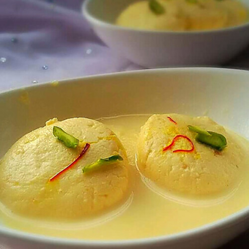

Ras Malai

Ras Malai is a popular Indian dessert known for its exquisite flavor and delicate texture. It consists of soft, spongy cheese dumplings, called "chenna," soaked in sweetened, saffron-infused milk. The dumplings are typically flavored with cardamom and garnished with slivered pistachios or almonds. Ras Malai is a delightful treat that offers a perfect balance of creamy, sweet, and aromatic flavors, making it a beloved dessert in Indian cuisine.
Ingredients
- Milk
- Lemon juice or vinegar (for curdling milk)
- Water
- Sugar
- Saffron threads (optional)
- Cardamom pods or cardamom powder
- Pistachios (for garnish)
- Almonds (for garnish)
Steps
- Boil milk in a heavy-bottomed pan.
- Add lemon juice or vinegar to curdle the milk, creating chenna (cheese-like curds).
- Drain the whey from the chenna using a muslin cloth or cheesecloth.
- Knead the chenna to make it smooth and divide it into small, equal-sized balls, shaping them into flattened dumplings.
- In a separate pot, prepare a sugar syrup with water and sugar. Optionally, add saffron threads and cardamom for flavor.
- Bring the syrup to a boil and gently place the chenna dumplings into the simmering syrup.
- Cover the pot and let the dumplings simmer for about 15-20 minutes until they double in size and become spongy.
- Once cooked, remove the dumplings and let them cool.
- Garnish the Ras Malai with slivered pistachios and almonds.
- Chill the Ras Malai in the refrigerator for a few hours before serving.
- Your delicious Ras Malai is ready to be enjoyed as a sweet dessert.